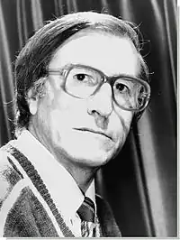

Ервін Османович Умеров (кримскотат. Ervin Osman oğlu Ümerov; 1938-2007) — відомий кримськотатарський письменник.
Умеров Ервін народився в 1938 році в селі Яни-Сала Жовтневого району Кримської АРСР (нині село Рогово Красногвардійського району Криму) в родині службовців (учителів).
У 1944 році, 6 років від роду, як і весь кримськотатарський народ, був репресований — висланий до Середньої Азії разом з батьками. Потрапив в глухе узбецьке селище Паласан Алти-Арикского району Ферганської області. Навчався в середній школі № 1 ім. А. С. Пушкіна, що перебувала в райцентрі Алти-Арик, в шести кілометрах від Паласана. Закінчив її в 1957 році. Після закінчення школи майбутній письменник працював спочатку слюсарем-арматурником на нафтопереробному заводі, потім — інспектором районного статистичного управління. Але любов до літератури, яка не давала йому спокою ще зі шкільної пори, приводить його в 1960 році разом зі своїм товаришем Емілем Амітом до Літературного інституту ім. А. М. Горького в Москві. Після закінчення його був спрямований в Ташкент, де був прийнятий на роботу літсотрудніком в газету "Ленін байраг'и" ( "Ленінський прапор"), що почала виходити на той час на кримсько-татарській мові як орган ЦК КП Узбекистану. Пропрацювавши в газеті близько п'яти років, Ервін перейшов працювати редактором відділу літератури народів СРСР Головної редакції Літдрамвещанія Всесоюзного радіо. У 1976 році перейшов працювати до видавництва "Дитяча література" старшим редактором відділу літератури народів СРСР, де і пропрацював до виходу на пенсію. Письменство почав з журналістської діяльності: співпрацював у якості сількора з обласними газетами Фергани і республіканськими піонерськими і комсомольськими виданнями в Ташкенті. Перша серйозна публікація — розповідь в збірці кримськотатарських письменників "Дні нашого життя", випущеному видавництвом художньої літератури Узбецької РСР до декаді мистецтва і літератури Узбекистану в Москві в 1959 році. Своє ставлення до страшної депортації, відірвавшись весь народ від своїх коренів, від рідної землі, письменник відобразив в написаних ще в кінці 60-х років минулого століття блискучих оповіданнях "Самотність", "Чорні поїзда", "Дозвіл", які за тематикою і змістом не могли бути надрукованими тоді і ходили по руках в рукописному вигляді. Особливий успіх у "підпільних" читачів мав розповідь "Самотність". Більш ніж за 40-річну літературну діяльність випустив понад 50 книг, своїх, авторських, і перекладених російською мовою творів тюркомовних письменників республік СРСР. У 2002 році, московське видавництво "Текст" випустило, за сприяння Фонду Сороса, збірник "Чорні поїзда", до якого увійшли оповідання та документальна повість, присвячені трагічним подіям, що приніс як автору, так і його народу чимало болю, образ і випробувань — темі депортації. Член Спілки журналістів СРСР з 1966 року, член Спілки письменників СРСР — з 1978 року. З 1993 р Ервін Умеров був прописаний в Сімферополі і стояв в черзі на отримання житла. Але мрії всього його життя не вдалося збутися ... Страшна хвороба, виявлена раптово, зжерла його буквально за півтора року. Письменник помер 24 лютого 2007 року в Москві. На його прохання рідні поховали його на батьківщині, в Криму.